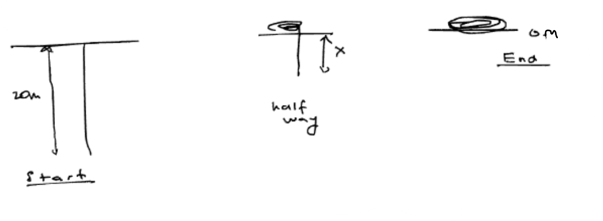
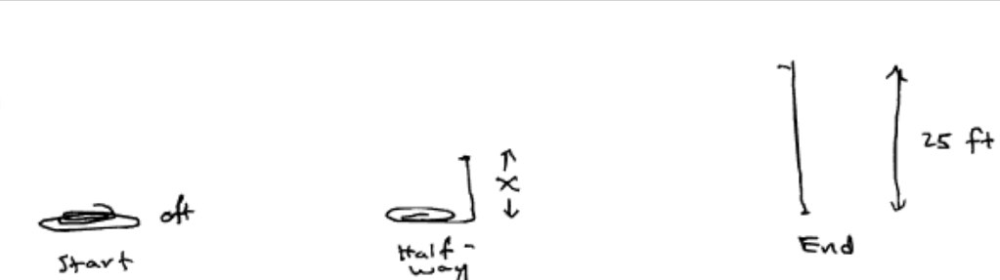
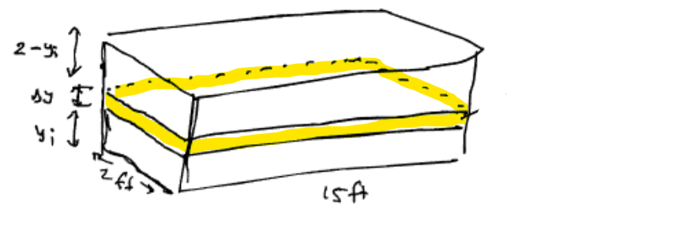
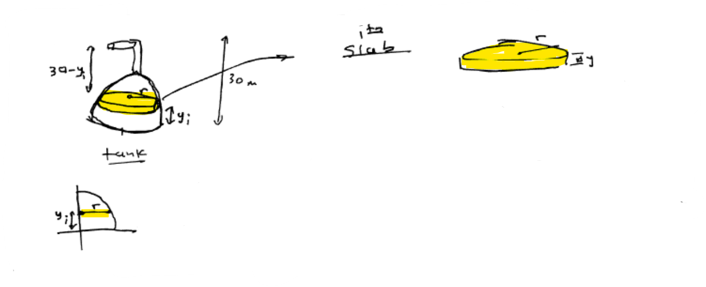
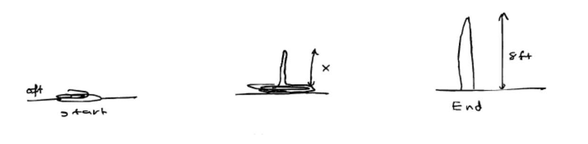
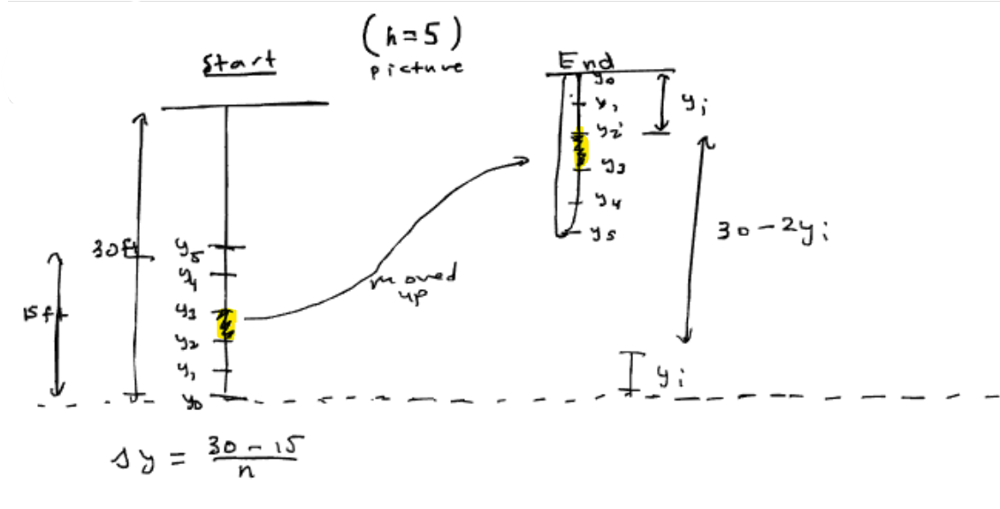
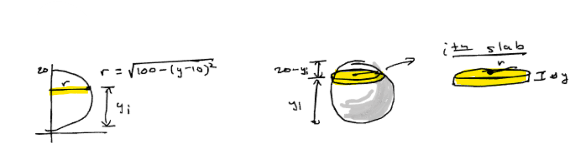

Let $x$ be the amount of rope left hanging. Then the variable force is $$ F(x)=2x. $$ So the total work is $$ W=\int_0^{20}2x\,dx =x^2\Big|_0^{20} =(20)^2-0^2 =400. $$
Let $x$ be the amount of chain hanging in air. Then the variable force is $$ F(x)=5x. $$ Hence $$ W=\int_0^{25}5x\,dx =\frac{5x^2}{2}\Big|_0^{25} =\frac{5(25)^2}{2}-\frac{5(0)^2}{2} =1562.5. $$
The volume of the $i$th slab is $$ V=2\cdot 15\cdot \Delta y=30\Delta y. $$ Its weight is $$ 62.4(30\Delta y)=1872\Delta y. $$ A slice at height $y_i$ must be lifted $$ 2-y_i $$ feet. So the total work is $$ W=\lim_{n\to\infty}\sum_{i=1}^n 1872(2-y_i)\Delta y =\int_0^2 1872(2-y)\,dy. $$ Now compute: $$ W=1872\left(2y-\frac{y^2}{2}\right)\Big|_0^2 =1872\left(2(2)-\frac{(2)^2}{2}\right)-0 =1872(4-2) =3744. $$
At height $y_i$, the radius is $$ r=\sqrt{400-y_i^2}. $$ So the volume of the $i$th slab is $$ V=\pi r^2\Delta y =\pi(400-y_i^2)\Delta y. $$ Its weight is $$ 8240\pi(400-y_i^2)\Delta y. $$ Since the liquid is pumped $10$ meters above the top of the tank, a slice at height $y_i$ must be lifted $$ 30-y_i $$ meters. Therefore $$ W=\lim_{n\to\infty}\sum_{i=1}^n 8240\pi(400-y_i^2)(30-y_i)\Delta y =\int_0^{20}8240\pi(400-y^2)(30-y)\,dy. $$ Expanding: $$ W=8240\pi\int_0^{20}(12000-400y-30y^2+y^3)\,dy. $$ Now compute: $$ W=8240\pi\left(12000y-200y^2-10y^3+\frac{y^4}{4}\right)\Big|_0^{20} $$ $$ =8240\pi\left(12000(20)-200(20)^2-10(20)^3+\frac{(20)^4}{4}\right) $$ $$ =8240\pi(240000-80000-80000+40000) $$ $$ =8240\pi(120000) =988{,}800{,}000\pi. $$
Let $x$ be the distance the midpoint is above the ground. Then there are two halves of rope in air of length $x$ each, so the total rope in air is $$ x+x=2x. $$ Since the rope weighs $\frac14\text{ lb/ft}$, the variable force is $$ F(x)=\frac14(2x)=\frac{x}{2}. $$ Hence $$ W=\int_0^8 \frac{x}{2}\,dx =\frac{x^2}{4}\Big|_0^8 =\frac{(8)^2}{4}-0 =16. $$
Let $$ \Delta y=\frac{15}{n}. $$ A small piece of chain has weight $$ 5\Delta y. $$ A piece originally at height $y_i$ moves to height $30-y_i$, so the distance it is lifted is $$ (30-y_i)-y_i=30-2y_i. $$ Therefore the work is $$ W=\lim_{n\to\infty}\sum_{i=1}^n 5(30-2y_i)\Delta y =\int_0^{15}5(30-2y)\,dy. $$ Now compute: $$ W=5(30y-y^2)\Big|_0^{15} =5\left(30(15)-(15)^2\right)-0 =5(450-225) =1125. $$
Since $$ r=\sqrt{100-(y_i-10)^2}, $$ we have $$ r^2=100-(y_i-10)^2. $$ Expanding: $$ r^2=100-(y_i^2-20y_i+100)=-y_i^2+20y_i. $$ So the volume of the $i$th slab is $$ V=\pi r^2\Delta y =\pi(-y_i^2+20y_i)\Delta y. $$ Its weight is $$ 8240\pi(-y_i^2+20y_i)\Delta y. $$ A slice at height $y_i$ must be lifted to the top of the tank, so the distance is $$ 20-y_i. $$ Hence $$ W=\lim_{n\to\infty}\sum_{i=1}^n 8240\pi(-y_i^2+20y_i)(20-y_i)\Delta y =\int_0^{20}8240\pi(-y^2+20y)(20-y)\,dy. $$ Expanding: $$ W=8240\pi\int_0^{20}(y^3-40y^2+400y)\,dy. $$ Now compute: $$ W=8240\pi\left(\frac{y^4}{4}-\frac{40y^3}{3}+200y^2\right)\Big|_0^{20} $$ $$ =8240\pi\left(\frac{(20)^4}{4}-\frac{40(20)^3}{3}+200(20)^2\right) $$ $$ =8240\pi\left(40000-\frac{320000}{3}+80000\right) $$ $$ =8240\pi\left(\frac{120000-320000+240000}{3}\right) =8240\pi\left(\frac{40000}{3}\right) =\frac{329{,}600{,}000\pi}{3}. $$